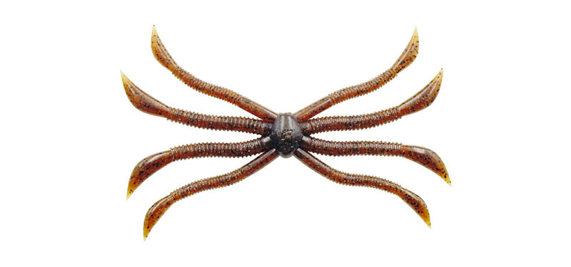
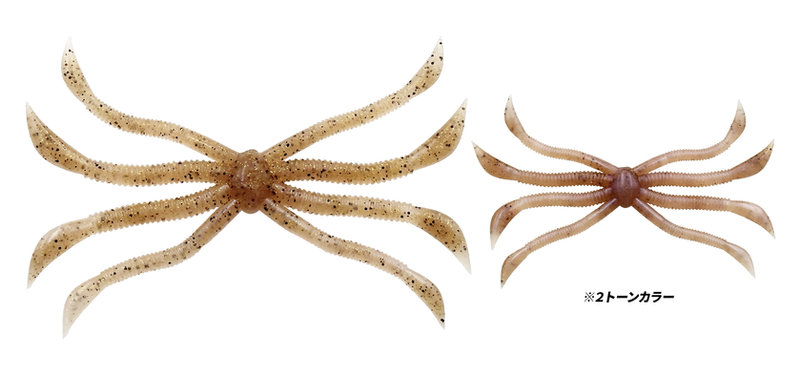
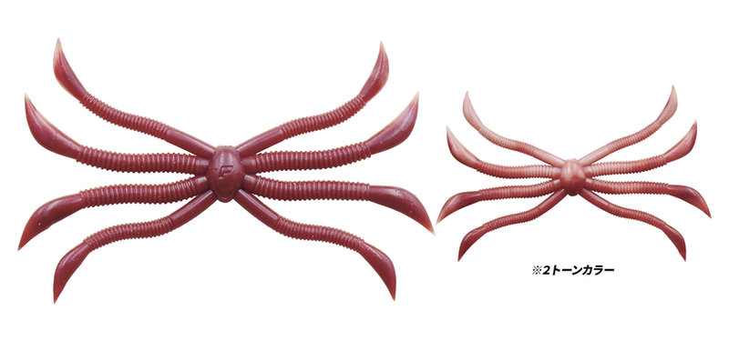
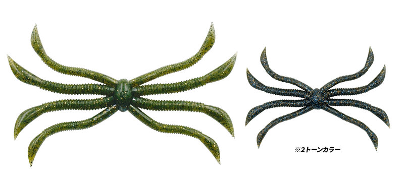
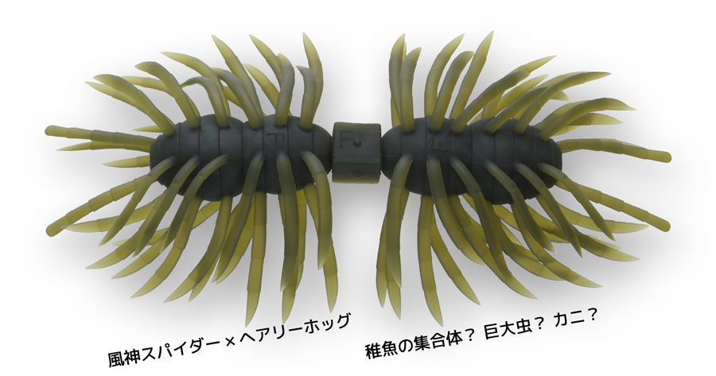

オクトパス
（OCTOPUS）
オクトパスは、フィッシュマグネットのバス用ワームです。考案者は秦拓馬さん。コンセプトは「一体化で集魚パワーの最大化」です。
ストレートワームを何本も束ねて掛けていた秦さんのアイデアを形にしたもので、マガテールをベースにした8本のアームを楕円の球体でひとつにまとめ、1本で何本分ものアピールを出せるのが最大の特徴です。

画像出典:フィッシュマグネット公式HP
スペック
- メーカー
- FISH MAGNET（フィッシュマグネット）
- 考案
- 秦拓馬
- タイプ
- ワーム
- 全長
- 140mm
- 入り数
- 2本
- カラー
- 全6色
- ターゲット
- バス
- 価格
- 1,650円（税込）
▼今すぐチェック
オクトパスの特徴
一体化で集魚パワーの最大化
-
8本のアームを1つにまとめた形
ストレートワームを束にして掛けるアイデアから生まれた。楕円の球体の左右にアームを4本ずつ並べて、1本で束のようなボリュームと水押しを出す。
-
マガテールがベースのアーム
アームはマガテールがベース。止めていても、わずかな水の動きで細かく揺れてアピールし続ける。
-
球体がバイトマーカーになる
中心の楕円の球体が、バスに狙わせるバイトマーカーの役割をする。フックを刺す場所もはっきりしていて、いろいろなリグに使える。
オクトパスの使い方
おすすめのリグは、インチワッキー（ZAPPU インチワッキーキングコブラ）と、フリーリグ（RPZタリズマン#2/0＋ピンフリーショット）です。カバーの際やボトムに落として、アームの動きで誘いましょう。
カバーの中を攻めるなら、バウヘッド＋スーパーキャプテンフックVガード#2/0（フックを交換して使用）も公式で紹介されています。タックルはオクトパスミニと同じく、MLクラスのベイトタックルが基本です。
オクトパスの得意な状況
カバーまわりやボトムに大きいバスが付いている時や、濁りがある時に出番です。
8本のアームのボリュームと水押しで、1本でも束のように目立てるのが強み。ストレートワームでは弱い時に、存在感で寄せて球体を食わせる、よく釣れるワームです。
ワンポイント
インチワッキーでは、ボトムに着いたらラインを張りすぎずに小さくシェイクして、球体をその場に残したままアームだけを揺らすのがコツ。移動距離を抑えられるので、カバーの際で長く誘えます。
オクトパスとオクトパスミニの使い分け
| モデル | 全長 | 入り数 | 価格 |
こんな |
|---|---|---|---|---|
| オクトパス | 140mm | 2本 | 1,650円 | 強い |
| オクトパスミニ | 95mm | 2本 | 1,375円 | タフな |
スペックはフィッシュマグネット公式HPの記載より。
人気カラー
オクトパスの人気カラーを紹介します。

マルハタグリパングリーンパンプキン系の定番。どのフィールドでも使いやすい。

ワカサギシュリンプワカサギやエビを食べている時に。

プレミアムナマミミズミミズのようなナチュラルな色。濁りが入った時にも。

ウォーターメロンギルギルを食べているバスに。
※全6色。ほかにマルハタLDコーラ・シナモンブルーシュリンプがあります。
画像出典:フィッシュマグネット公式HP
▼今すぐチェック
オクトパスに似ているルアー
-
 オクトパスミニ
フィッシュマグネット
詳細はこちら＞
オクトパスミニ
フィッシュマグネット
詳細はこちら＞
同じ形の95mm。タフな状況で一口サイズにしたい時に。
-
 旧コイケ
ハイドアップ
詳細はこちら＞
旧コイケ
ハイドアップ
詳細はこちら＞
毛玉のような形のワーム。もっと小さく食わせたい時に。
-

ヘアリースパイダー クジャラ イマカツ 詳細はこちら＞たくさんの脚が動き続けるエラストマーワーム。